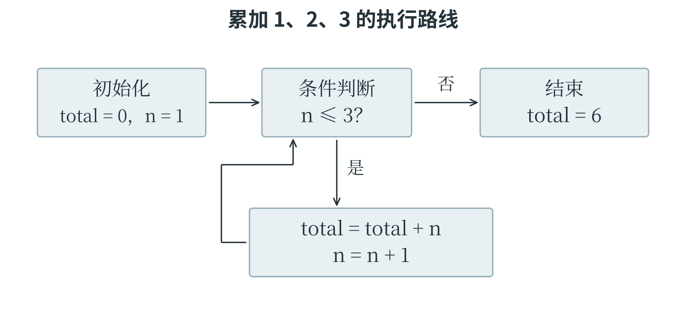

2.1 基础语法与程序执行
从代码到运行结果
程序是按照一定规则写成的一组指令，告诉计算机做什么、按什么顺序做。编写这些指令所用的语言称为编程语言，Python 就是其中一种。用编程语言写出的文字称为代码；代码中能够完成某个操作的指令称为语句。计算机不能只看见这些文字就自动完成工作，还需要由相应的软件读取和执行代码。负责运行 Python 代码的软件称为 Python 解释器。
输入和修改代码，要使用代码编辑器。本书采用 Python 3：在能运行 Python 3 的编辑器中新建代码文件，输入程序后执行“运行”，输出区域就会显示结果。代码文件通常以 .py 结尾，如 first.py。灰底代码块中的换行和行首空格都应保留，运行结果则会在正文或注释中另作说明。
Python 已经准备好了一些常用工具，print() 就是一个负责显示内容的函数。函数把一项工作组织成可以反复使用的操作，使用函数称为调用。调用时写出函数名和一对圆括号，需要交给它处理的信息放在括号内，称为参数。下面两行分别让 print() 显示一段文字和一个计算结果。
print("开始处理数据")
print(2 + 3)
程序从上向下执行，先输出 开始处理数据，再另起一行输出 5。第一行的引号说明里面是一段文字，这样的文字数据称为字符串；引号本身不属于要显示的内容。第二行没有给 2 + 3 加引号，因此会先做加法，再显示结果。能够计算出一个值的代码片段称为表达式，2 + 3 就是一个表达式。
输入代码时，括号、引号和逗号等符号应使用英文半角形式。中文全角括号不能直接代替圆括号。
变量让数据有了名字
处理一张图片时，程序需要记住它的宽度和高度；统计一批资料时，需要记住已经收集了多少条。变量是程序中用来关联数据的名字。有了名字，后面的语句就能通过它使用相应的数据，也能让这个名字改为关联新的数据。例如，可以用 width 表示图片宽度，用 height 表示高度。
width = 28
height = 28
pixel_count = width * height
print(pixel_count) # 784
第一行把整数 28 交给变量 width，这样的操作称为赋值。赋值写成 变量名 = 表达式：先求出等号右边的值，再让左边的名字与这个值关联。第二行同样记录高度；第三行读取两个变量的值，用 * 做乘法，把结果交给 pixel_count。最后一行输出 784。这里的图片宽和高都按像素计，算出的就是像素总数。代码中 # 后面的 784 是注释，用来说明结果，不参与执行；字符串里的 # 则只是普通文字。
变量可以重新赋值。例如，已经收集 80 条数据，后来又增加 5 条，就需要更新数量。下面的程序特意保留了更新前的数量，便于比较。
sample_count = 80
old_count = sample_count
sample_count = sample_count + 5
print(sample_count, old_count) # 85 80
第三行先读取当前的 sample_count，算出 80 + 5，再把 85 赋给这个名字。old_count 已在上一行取得当时的数值，不会随这次赋值一起改变。倘若一个名字还没有值就被读取，Python 会报告找不到它。
因此，程序里的 = 是一次赋值操作，并非数学中两边始终相等的关系。
变量名最好能说明用途，sample_count 比随手写的 a 更容易理解。常用名称由英文字母、数字和下划线组成，不能以数字开头；大小写有区别，score 与 Score 是两个名字。sample-count 会被读成减法，不能用来代替带下划线的名称。if、for 等已有特殊含义的词称为关键字，不能再拿来当变量名。Python 也允许不少中文字符用于命名，本书采用常见的英文名称，并在需要时解释含义。
数据的类型决定怎样处理
同样写着 25，可以表示一个数量，也可以只是编号中的两位文字。计算机需要分清这些情况。数据类型规定了一类数据的表示方式以及适合进行的操作。Python 的常用基本类型包括整数 int、浮点数 float、字符串 str 和布尔值 bool。整数用来表示没有小数部分的数量；浮点数可以表示带小数的数值，不过很多小数只能被近似保存；字符串保存文字；布尔值只有 True 和 False，分别表示真和假，常用来记录判断结果。
print(25 + 5) # 30
print("25" + "5") # 255
print(25 > 20) # True
第一行的 + 做加法，第二行的 + 则把两个字符串连接起来。第三行判断 25 是否大于 20，得到真值 True。"25" 是字符串，25 是整数，两者比较是否相等也会得到 False。直接写 "25" + 5 会报错，因为这里的加号不能把字符串和整数按同一种规则相加。要让文字参与数值计算，可以先做类型转换。这就是把合适的内容变成另一种类型。int("25") 把文字转成整数，float("25.5") 把文字转成浮点数，str(25) 则把整数转成字符串。这些写法都在调用相应的转换工具。转换也有条件：int("25.5") 不能直接处理带小数点的文字；若输入已经是浮点数，int(25.9) 得到 25，int(-25.9) 得到 -25，相当于舍去小数部分，并没有四舍五入。
Python 把程序使用的具体数据统称为对象，整数和字符串都是对象，各有类型和值。变量名“指向”对象，本身却不固定属于某种类型：value = 25 让它指向整数，value = "25" 又让它指向字符串。程序越长，越应让一个名字保持清楚、一致的用途，免得把文字误拿去做数值计算。
输入怎样进入程序
输入是把外部信息交给程序，输出是把程序的结果交出来。input() 可以读取一行输入；执行到这里时，程序会等待输入内容。输入结束后，input() 把读到的文字交回当前调用的位置，这称为返回，交回的内容称为返回值。下面先把输入保存到变量 text，再转换成整数。
text = input()
count = int(text)
print("样本数", count, sep="：")
输入 12 后，第一行得到的是字符串 "12"，第二行才得到整数 12，最后输出 样本数：12。按下运行后若暂时没有结果，可能只是程序正在等待输入；有些在线编辑器需要先在专门的输入区域填好内容。input() 也能在括号内接收一段提示文字，但题目若规定了输入输出格式，就应按约定编写，不能随意增加提示语。结果的显示方式可以交给 print() 的参数控制。它接收多个内容时用逗号分开，默认在中间显示空格、末尾换行；本例的 sep="：" 将分隔符改为中文冒号。end 控制结尾，print(1, 2, end="!") 会输出 1 2!，随后不自动换行。至于 print("count") 与 print(count)，前者显示引号中的单词，后者读取变量，两者做的工作不同。
运算与判断
加、减、乘、除分别写作 +、-、*、/，乘方写作 **，例如 2 ** 3 表示 2 的三次方，得到 8。// 表示整除，% 表示取余。以 17 除以 5 为例，17 // 5 得到 3，17 % 5 得到 2，对应 17 = 3 × 5 + 2。普通除法 10 / 2 得到浮点数 5.0。total += value 是常见简写；对于这里的数值，相当于 total = total + value。遇到负数，整除仍要按商向较小整数方向取整：-17 // 5 为 -4，余数 -17 % 5 为 3，满足 -17 = (-4) × 5 + 3。
整除向下取整与 int() 舍去小数部分，是两套不同的规则。
比较运算 >、<、==、!=、>=、<= 分别表示大于、小于、等于、不等于、大于等于、小于等于。它们产生真假结果，其中判断相等需要两个等号。一个判断有时包含不止一个要求，例如年龄应在 10 至 15 岁之间，就需要既不小于 10，又不大于 15。and 表示“并且”，要求两边都成立；or 表示“或者”，至少一边成立即可；not 则把真假取反。
age = 12
allowed = age >= 10 and age <= 15
print(allowed) # True
print(not allowed) # False
把年龄改为 8，第一个条件就不成立，整个 and 判断为假。误写成 or 却会让它通过，因为 8 满足“不大于 15”。这个范围也可以写成连续比较 10 <= age <= 15。
常见运算先处理括号，再进行乘方、乘除与整除取余、加减，之后进行比较，最后依次处理 not、and、or。负号与乘方相遇时，-2 ** 2 按 -(2 ** 2) 计算，结果为 -4；(-2) ** 2 才是 4。连续乘方 2 ** 3 ** 2 按 2 ** (3 ** 2) 计算，得到 512。较长的表达式可以用括号明确分组，使计算意图更清楚。
分支让程序选择路线
前面的程序基本按从上到下的顺序执行，这称为顺序结构。如果电量不足时准备充电，电量充足时继续工作，程序就需要根据条件选择不同的语句，这称为分支结构。Python 用 if 开始判断，用 elif 检查另一个条件，用 else 处理前面条件都不成立的情况。
battery = 15
if battery == 0:
status = "停止"
elif battery < 20:
status = "准备充电"
else:
status = "继续运行"
print(status) # 准备充电
每个条件后面的冒号表示下面跟着相应的一组语句，称为代码块。行首向右空出的距离称为缩进，它在 Python 中用来表示语句之间的层次，通常每一级使用四个空格。这里三行给 status 赋值的语句分别属于三个分支，最后的 print() 没有缩进，表示整组判断结束后再执行它。沿着这个层次看电量为 15 的情况：第一个条件不成立，第二个成立，于是 status 变为 "准备充电"，随后跳过 else。整组 if-elif-else 最多执行一个分支；两个独立的 if 却会各自判断。分支里还可以嵌入另一组判断，只有进入外层分支，内层才有执行机会。
缩进决定语句属于哪里，不能随意增减，也不要混用空格和制表符。这个例子执行的是人写好的电量规则；从数据中学习判断方法，要到后面的机器学习部分再讨论。
循环让相同的步骤重复执行
面对三条记录，可以把处理语句写三遍；面对三千条记录，这样做就很不方便。循环能够让一组语句重复执行。为了先把多项数据放在一起，可以使用列表：用方括号包围数据，项目之间用逗号分开，例如 [18, 20, 25]。列表里的每一项称为一个元素，有关列表的更多操作将在下一节展开。
values = [18, 20, 25]
total = 0
for value in values:
total = total + value
print(total) # 63
for value in values: 的意思是依次取出列表中的元素，每次交给变量 value，再执行缩进的循环体。第一次取出 18，把总数从 0 改成 18；第二次取出 20，总数变成 38；第三次取出 25，总数变成 63。元素取完以后离开循环，执行最后的输出。这种逐项访问数据的过程称为遍历。字符串同样可以遍历，for letter in "cat": 会依次得到 "c"、"a"、"t"。能够提供这些逐项访问结果的数据对象，统称为可迭代对象。
如果只需要重复若干次，可以用 range() 提供一段整数。range(4) 从 0 开始，给出 0、1、2、3；指定起点时，range(1, 4) 给出 1、2、3。第三个参数是每次前进的步长，例如 range(2, 7, 2) 给出 2、4、6，range(5, 0, -1) 给出 5、4、3、2、1。
range() 不包含终点，步长也不能为零。方向不合适时可能一个数也取不到，例如 range(5, 0)。给循环变量另外赋值，也不会改变 for 下一次从原有数据中取出的元素。
while 是另一种循环：每次进入循环体之前先检查条件，条件为真才继续。下面计算 1、2、3 的总和，每次把当前的 n 加入总数，再把 n 增加 1。
total = 0
n = 1
while n <= 3:
total += n
n += 1
print(total, n) # 6 4
表 2-1 记录了每轮的变化。第三轮结束时，n 已变成 4；再次检查 n <= 3，条件不成立，循环结束，所以最后输出的 n 是 4。若漏掉 n += 1，n 一直是 1，条件就始终成立，形成无法正常结束的循环。跟踪程序时，必须看清每条语句执行的先后，不能把“先累加、再更新”读成相反顺序。
表 2-1 循环中变量的变化
| 次数 | 进入循环时的 n | 累加后的 total | 更新后的 n |
|---|---|---|---|
| 第一次 | 1 | 1 | 2 |
| 第二次 | 2 | 3 | 3 |
| 第三次 | 3 | 6 | 4 |
把循环画成执行过程
读循环时，可以把“将要检查的条件”和“刚刚完成的语句”分开。前面的 while 程序进入循环前，n 为 1、total 为 0；检查条件后，才执行累加；累加完成，再更新 n。图 2-1 把这几步连成一个回路，返回条件判断的箭头说明：每一轮都要重新读取变量的当前值。循环结束后的 print() 位于回路外，因此只在离开循环后执行一次。

如果把 print(total) 缩进到循环体末尾，输出就变成 1、3、6 三个中间结果。若再把 total = 0 也移入循环体，每轮都会重新清零，便失去了累积的作用。相同语句放在不同层次，程序完成的任务也会改变。跟踪变量的表格与执行路线图可以相互配合：表格记录数值，路线图解释为什么接下来会执行这一步。
提前结束与跳过一轮
有时数据还没有处理完，但需要的结果已经找到，这时可以用 break 结束当前这一层循环。另一些时候，只是当前这一项不符合要求，后面的数据还应继续处理，就可以用 continue 跳过本轮剩下的语句。下面约定负数表示无效记录，只把非负数加入总数。
values = [3, -1, 5]
total = 0
for value in values:
if value < 0:
continue
total += value
print(total) # 8
取到 -1 时进入内层分支，continue 使程序跳过本轮的累加，随后继续取出 5。这里的 total += value 与内层 if 对齐，属于循环体，但不属于 if 的代码块。pass 则表示什么也不做，常在语法要求必须有一句语句、暂时又没有具体操作时占位；它既不会退出循环，也不会跳过后面的语句。使用 while 和 continue 时，应让计数或状态得到必要的更新，否则可能反复停在同一种情况。
循环也可以嵌套。例如，外层处理两行数据，内层处理每行的三项，最内层的操作一共执行六次，下一节的二维列表会给出完整例子。内层的 break 只结束内层，外层仍可继续。循环后还可以跟 else，它表示循环正常结束时要做的事；通过 break 提前离开时，则跳过它。下面用 len(values) 取得列表长度，从左向右寻找数字 7。
values = [4, 7, 10]
index = 0
while index < len(values):
if values[index] == 7:
print(index) # 1
break
index += 1
else:
print("未找到")
列表位置从 0 开始，values[index] 取出指定位置的元素。第一次检查位置 0 的数字 4，未找到；第二次检查位置 1 的数字 7，输出位置并结束循环。若把要找的数改成 8，循环会走完，执行 else。这里的 else 与 while 对齐，属于循环；如果与内层 if 对齐，含义就变了。for 的元素取完或 while 的条件变为假，都会执行循环的 else，即使一开始就没有循环次数也如此；如果程序因函数返回或未处理的错误而中断，则不会补做它。
条件中不一定有比较式。零、空字符串、空列表和 None 都会被当作假值，常见的非零数与非空容器会被当作真值。None 表示没有具体值，if values: 则可以检查列表是否非空。
and 和 or 还采用短路求值：前面的值已能决定结果，就不再计算后面。例如 count != 0 and total / count > 10 先检查数量，数量为零时便不会执行除法。这两个运算返回参与判断的某个值，不一定是布尔值；"" or "未命名" 返回的就是字符串 "未命名"。读到这样的表达式，除了判断真假，还要看它究竟交回了什么值。